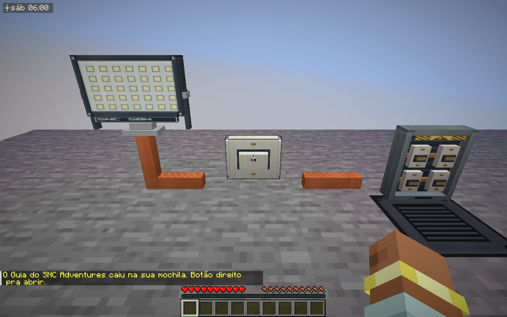
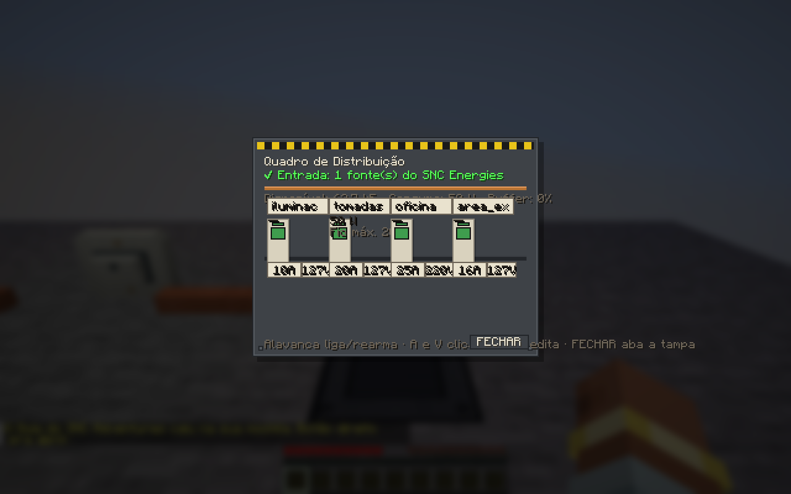

SNC Adventures — testes elétricos no Minecraft
Capturas do cliente real em mundo isolado, não mockups.
Interruptor ligado: refletor alimentado

Interruptor desligado: corte da alimentação
Quadro aberto com medição em funcionamento
